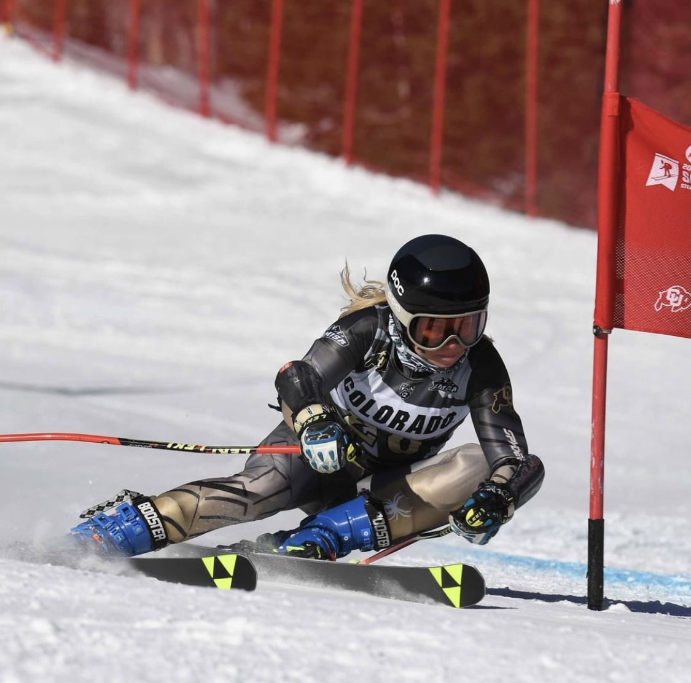
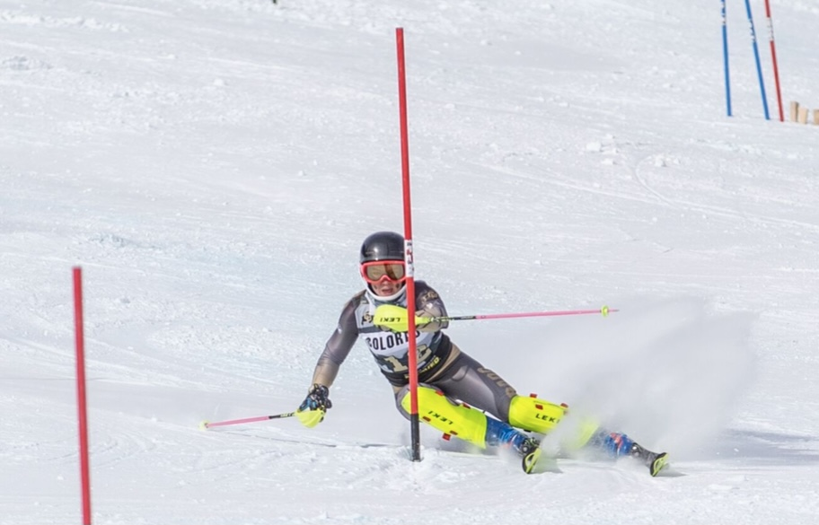
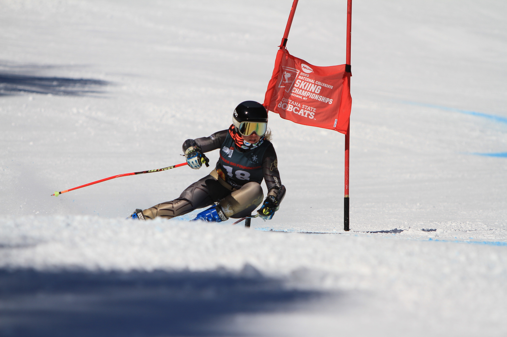
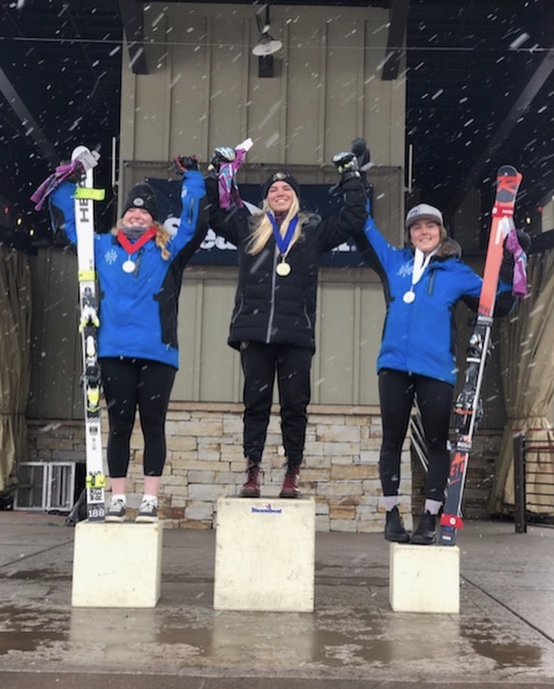
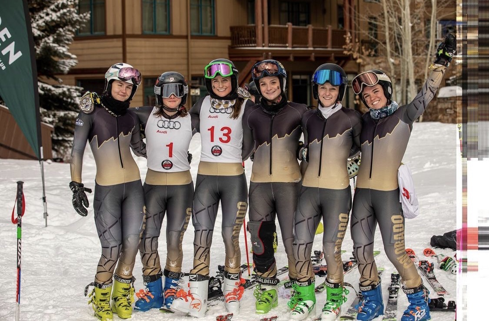
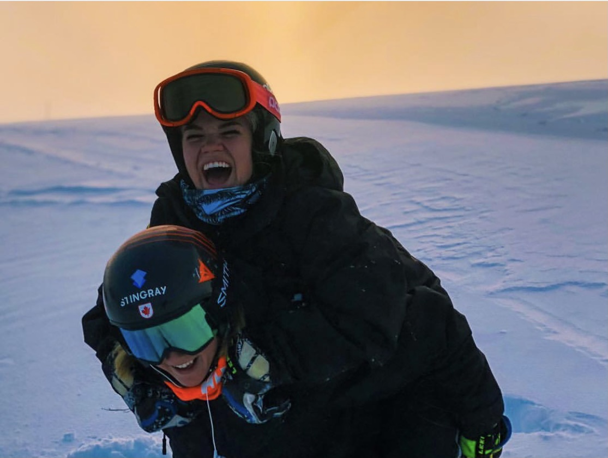

1 / 7

CU Home Opener: GS at Eldora, Jan 2020
2 / 7

CU Home Opener: Slalom at Eldora, Jan 2020
3 / 7

MSU Invitational: GS at Bridger Bowl, Feb 2020
4 / 7

Steamboat FIS Race: GS U21 Podium
5 / 7

DU Invitational: GS at Aspen, Jan 2020
6 / 7

Training at Copper: With my teammate Mikaela Tommy, Oct 2018
7 / 7

Winter Park FIS Race: Team Picture following the GS race, Jan 2020
Division I Alpine Ski Racer.
I have been ski racing since I was 5 years old. I grew up skiing for Team Summit at Copper, and switched teams to Ski & Snowboard Club Vail in 2010. I graduated a year early from high school and got recruited to ski on the University of Colorado’s NCAA Division I Alpine Ski Team in 2018. I am now a senior on the team, and the Women’s Team Captain this year!
CU Athletics Bio